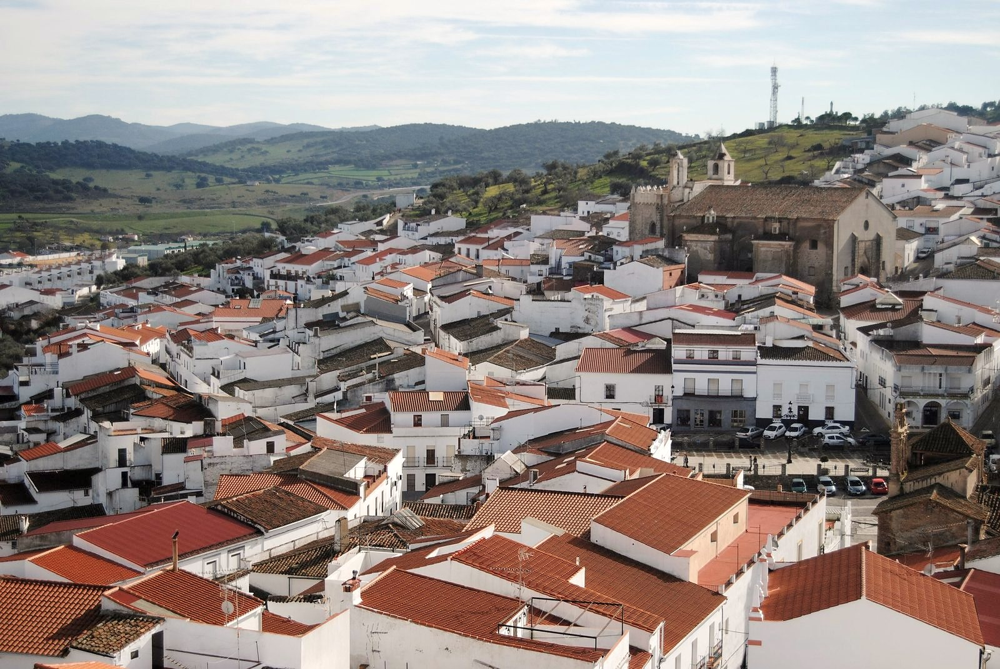
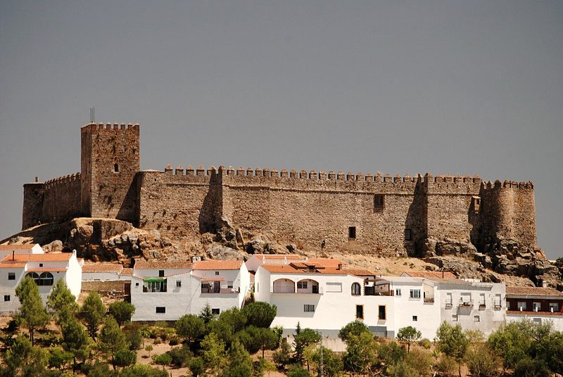
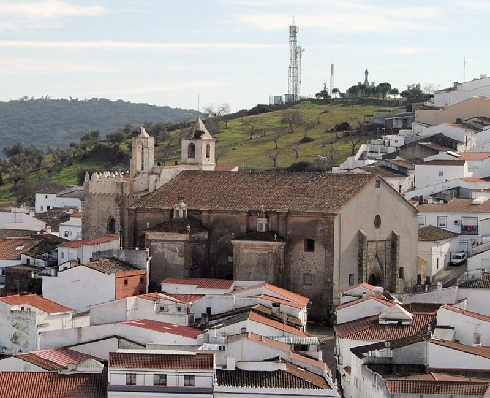
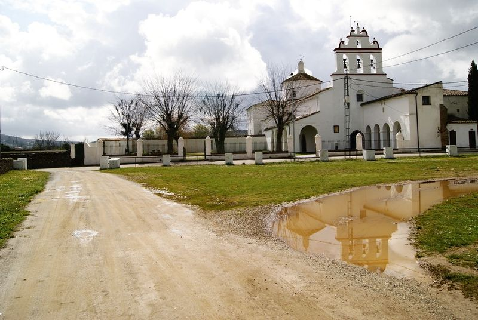
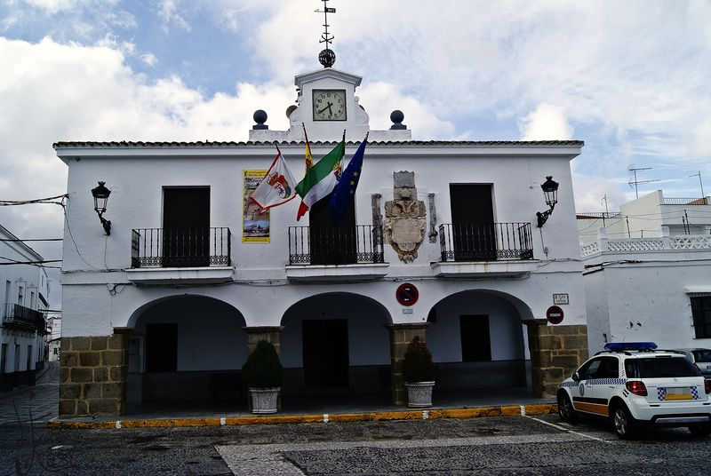
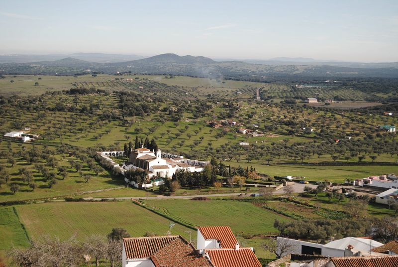
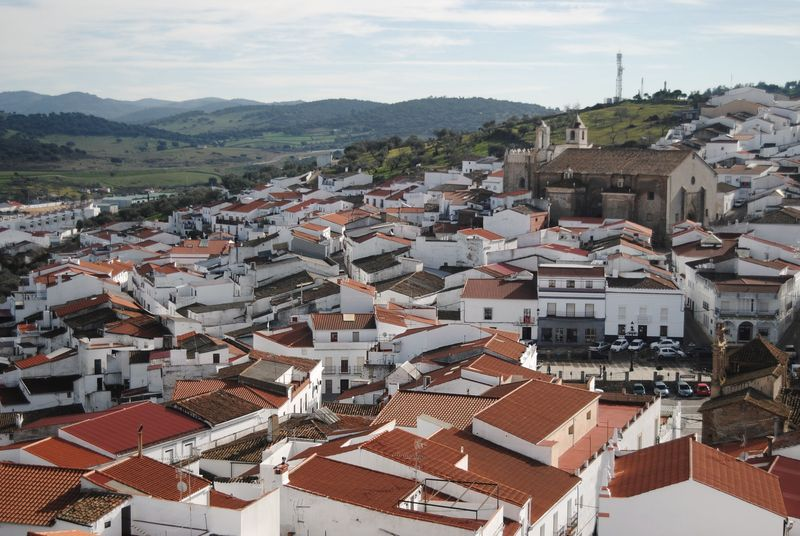
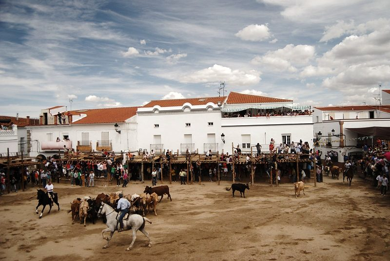

El pueblo
Una villa blanca entre dos cerros, a los pies de un castillo santiaguista. Fue capital de la Encomienda Mayor de León de la Orden de Santiago, y cada septiembre la Plaza de España se cierra para las Capeas.

Qué ver
-

El castillo
Santiaguista, del siglo XIV, con la torre del Homenaje y sus 24 almenas. Se visita con audioguía.
Foto: Ana Rey (Wikimedia Commons) · CC BY-SA 2.0
-

Iglesia de la Asunción
Bien de Interés Cultural desde 2009. Guarda un lienzo de Valdés Leal y un órgano barroco de 1782.
Foto: Ana Rey (Wikimedia Commons) · CC BY-SA 2.0
-

Convento de San Benito
Franciscano, de 1477-1480, con claustro mudéjar y el Cristo de la Reja, patrón de las Capeas.
Foto: web del Ayuntamiento de Segura de León (galería, 2017)
-

Casa Consistorial
De 1555, con soportales y el escudo imperial de Carlos V. Preside la Plaza de España.
Foto: web del Ayuntamiento de Segura de León (página de la Casa Consistorial)
-

Ermita de los Remedios
Con soportal de 1833 y retablo barroco. Junto a ella está el cementerio.
Foto: Ana Rey (Wikimedia Commons) · CC BY-SA 2.0
-

Calles y tejados
El caserío encalado, visto desde el paseo de ronda del castillo.
Foto: Ana Rey (Wikimedia Commons) · CC BY-SA 2.0
-

Las Capeas
Cada septiembre, la Plaza de España se cierra con tablaos para torear las vacas que ceden los ganaderos.
Foto: Ana Rey (Wikimedia Commons) · CC BY-SA 2.0
El término en un mapa
Lugares del mapa
Cómo leerlo
- Límite del término municipal (línea discontinua)
- El pueblo (área sombreada)
- Carreteras (línea gruesa): BA-092, EX-103, EX-201, EX-201R y EX-202
- Rutas (línea de puntos): Camino de Santiago del Sur
- Círculo con número: un lugar de la lista
- Escala: la barra de abajo mide 5 km
- Recuadro: el pueblo ampliado; su barra mide 500 m
- Raya fina con un punto: el sitio exacto, cuando el número se ha apartado para que se lea
Para visitar
-
Castillo santiaguista
Visita libre con audioguía en español e inglés: patio de armas, paseo de ronda, torre del Homenaje, calabozo, capilla y la pinacoteca de Antonio Casquete de Prado.
- Dirección
- C/ Castillo
- Horario
- Sábados, de 10:30 a 14:30 y de 16:30 a 18:30; domingos, de 10:30 a 14:30 (horario de invierno)
- Entrada
- 3 €; 1 € de 12 a 15 años y empadronados; gratis para menores de 12, pensionistas y personas con discapacidad
Sin reserva. En verano, el sábado por la tarde abre de 18:00 a 20:00. Fuera de horario, con reserva en la Oficina de Turismo.
Llamar a Castillo santiaguista: 615 625 117
Escuchar las audioguías: Castillo santiaguista, se abre otra web
-
Museo y Centro de Estudios de la Capea
Una casa rehabilitada dedicada a las Capeas: la tranca, la tronera, los tablaos y los ganaderos. Para llegar, siga las pisadas que empiezan en la plaza.
- Horario
- En verano, de jueves a domingo, de 21:30 a 0:00
El resto del año, con reserva en la Oficina de Turismo.
Llamar a Museo y Centro de Estudios de la Capea: 615 625 117
-
Exposición de Antonio Aradillas
Cuarenta cuadros, ochenta y tres libros y viñetas originales que el sacerdote y periodista donó al pueblo, en la Casa de la Cultura.
Con cita previa en la Oficina de Turismo.
-
Oficina de Turismo
Guías, paquetes de visita para grupos y la gymkana turística digital. Se puede entrar con perro en la oficina, el castillo y el museo.
- Dirección
- C/ Castillo, 1
- Horario
- Martes a jueves, de 10:00 a 14:30; viernes, de 10:00 a 14:30 y de 17:00 a 19:00
Las visitas guiadas se conciertan con 48 horas de antelación. Correo: oficinadeturismo@seguradeleon.es.
La cartela de la judería
IN DNO CVI FIDO 1554
«En el Señor confío». La judería ocupaba las calles Castillo, Portugalejo, Santa Cruz y Mesones; la sinagoga, hoy desaparecida, estaba en la calle Castillo.
Historia
Hubo una villa romana en el paraje del Torreón, cerca del Cristo de la Reja. La Orden de Santiago conquistó estas tierras en 1248, y en 1274 el maestre Pelay Pérez Correa concedió fuero a la villa, que se separó así de Montemolín.
Segura fue capital de la Encomienda Mayor de León y sede de la Vicaría de Tudía hasta el siglo XIX; de ahí la cruz de Santiago y el león de su escudo. Fue también cabeza de partido judicial de 1274 a 1834.
En el siglo XIV la Orden levantó el castillo, y Alonso de Cárdenas, el último maestre, lo hizo su palacio. La villa tuvo judería hasta 1492, y en ella vivió en 1483 el financiero y teólogo Isaac Abravanel.
De sus pinares salían vigas, tablas, sillas y piñones que los segureños vendían por el sur de Extremadura. En 1973 la Diputación compró el castillo por un millón de pesetas y lo cedió al Ayuntamiento, que lo ha restaurado y hoy lo enseña.
Patrimonio
- Castillo santiaguistaSiglo XIV. Torres de Miramontes y de los Alcaides, torre del Homenaje con 24 almenas, capilla, mazmorra y dos aljibes.
- Iglesia parroquial de Nuestra Señora de la AsunciónBIC (2009). Inscripción de 1299, capilla de Hernán Mejías, 13 retablos, el «Martirio de San Bartolomé» de Valdés Leal y el órgano de Tomás Risueño (1782).
- Convento de San Benito y Cristo de la RejaFranciscano, de 1477-1480. Doble claustro mudéjar con pinturas al temple del siglo XVII y la talla del Cristo, de principios del XVI, atribuida a Pedro Millán.
- Casa ConsistorialDe 1555, reconstruida en 1967. Conserva los arcos y el escudo imperial de Carlos V.
- Casa del GobernadorVivienda del gobernador o alcalde mayor del siglo XVI a 1833, con portada de granito y grutescos.
- Convento de la Limpia Concepción (iglesia de Fátima)Fundado hacia 1571-1573 por García de Merlo y Beatriz Núñez para monjas concepcionistas, que estuvieron hasta 1870.
- Ermita de los Remedios y cementerioSoportal de 1833 y retablo barroco del siglo XVIII. El cementerio es de 1829.
- Ermita de las AngustiasDe principios del siglo XVI, con portada isabelina.
- Ermita de San RoqueDel antiguo hospital de San Roque (siglo XVII), con la imagen del patrón.
- Aljama o juderíaEntre las calles Castillo, Portugalejo, Santa Cruz y Mesones, con la cartela de 1554.
- Plazas y arqueríasLa Plaza de España, la de la Iglesia y la de Don Carmelo, y los soportales de la calle San Roque.
- Monumento al Sagrado CorazónInaugurado en 1930 en el cerro de la Piedra Gorda. Es un mirador.
- Tesoro de la MartelaJoyas de oro del siglo IV a. C. halladas en 1984. Está en el Museo Arqueológico de Badajoz.
- Molinos de aceite y Arcos de la AlcantarillaTorres de viga en las calles Sánchez Miranda y Enfermería, y los arcos del puente sobre el arroyo del Pasay.
- Siete FuentesSanta María, el Caño, la Bejarana, el Pilar Chico, el Pilar Viejo, la Alcantarilla y la Carriona.
- Sierra y castillo de GigonzaA 738 m, con los restos de un castillo musulmán del siglo X.
- Cañada Real Soriana y Charco HondoLa vía pecuaria por la que bajaban los rebaños de la Mesta.
Fiestas
Enero
- Cabalgata de Reyes5 de enero
Febrero
- Candelaria y San Blas2 y 3 de febrero
- CarnavalAntes de la Cuaresma
Marzo
- Día de la TortillaAntes de Semana Santa
Abril
- Semana SantaCon el Amarrao, la madrugá y el Pregón de Pilatos
- Virgen de los RemediosEl lunes de la semana siguiente a Pascua
- Día del CaminoÚltimo sábado de abril
Mayo
- Cruces de MayoNoche del 2 al 3 de mayo
- San IsidroEl fin de semana siguiente al 15 de mayo, con casetas en el Llano del Convento
Junio
- Feria Gastronómica «Segura, para comérsela»En junio
Julio
Sin fiestas señaladas
Agosto
- San Roque, patrón, y la Asunción Fiesta mayor15 y 16 de agosto, con el Ramo y los merengues
Septiembre
- Día de la TrancaEl sábado antes de las Capeas
- Las Capeas, en honor al Cristo de la Reja Fiesta mayorMediados de septiembre; el 14, día del Cristo
Octubre Este mes
- San FranciscoEn torno al 4 de octubre, en el Llano del Convento
- Noche en BlancoUn sábado de octubre
Noviembre
Sin fiestas señaladas
Diciembre
- Mercado NavideñoEn diciembre
- Día de las Migas31 de diciembre
Gastronomía
Platos
- Tostadas con zurrapa o de caldillo
- Migas
- Bacalao guisao
- Tortilla de patatas
- Calandracas
- Guarrito frito
- Ancas de rana rebozadas
- Setas: níscalos, boletos y gurumelos
- Caza: perdiz, conejo y liebre con arroz
- Puchas
- Sopas de ajo y de tomate
- Gazpacho y salmorejo
- Jamón ibérico de bellota
Dulces
- Merengues
- Roscas
- Flores
- Piñonate
Para beber
- Vino de pitarra
- Licor de «gloria»
Personajes
Alonso de Cárdenas
Siglo XV
Último maestre de la Orden de Santiago. Comendador mayor desde 1450, hizo del castillo su palacio.
Leonor de Luna
Siglo XV
Esposa de Alonso de Cárdenas y cofundadora del convento de San Benito.
Isaac Abravanel
Siglo XV
Financiero y teólogo, huido de Portugal. Vivió en la judería de Segura nueve meses, desde el 1 de junio de 1483.
Diego Mexías
Murió en 1540
Capitán en la conquista del Perú. Su legado pagó la capilla de los Mexía de la parroquia.
Álvaro Martín
Siglo XVI
Indiano en Panamá. Donó 1.600 ducados al convento de San Benito, donde está su capilla.
Beatriz Núñez
Siglo XVI
Fundó con su marido, García de Merlo, el convento de la Limpia Concepción.
Ildefonso Serrano
Párroco de 1889 a 1927
«El Sabio de Extremadura». Fundó un colegio, la revista Lumen, una imprenta, el sindicato agrícola y la Caja Rural.
José Pérez Jiménez
Nació en 1887
Pintor. Fue profesor en Oviedo desde 1914.
Guillermo Silveira
1922-1987
Pintor y escultor. Medalla de oro de la IV Bienal Extremeña (1970).
Rutas
Ruta Verde
15 km, dificultad baja. Polígono, Juanadame, Charco Hondo, Los Molinillos y la piscina.
Ruta Roja
12 km, dificultad baja. El Tropezón, el Torreón, el Cristo de la Reja, Las Amarillas, La Contiña, Los Majadales y el Pilar Viejo.
Ruta Negra
18 km, dificultad media. Grano de Oro, Cuesta Casillas, la Cañada Real y la Fuente del Caño.
Ruta Azul
21 km, dificultad baja. Fuente de Santa María, El Sejo, La Orden, El Morito y Juanadame.
Ruta de las Siete Fuentes
Por las fuentes que daban agua al pueblo, de Santa María a la Carriona.
Camino de Santiago
Etapa del Camino del Sur desde Huelva: Fuentes de León, Segura de León y Valencia del Ventoso.
Dónde comer y dormir
Restaurantes y bares
- Restaurante La CafeteríaCtra. Fregenal-Santa Olalla, km 13,5 Llamar a Restaurante La Cafetería: 924 703 033
- Mesón Restaurante La TejaC/ Guardia Civil, s/n Llamar a Mesón Restaurante La Teja: 924 703 338
- Bar TropezónEX-201, 1 Llamar a Bar Tropezón: 650 688 255
- Bar San RoqueC/ San Roque, 12 Llamar a Bar San Roque: 615 976 551
- Bar LaureanoC/ Santa Olalla de Cala Llamar a Bar Laureano: 924 703 236
- Bar Casa ManoloPlaza de España, 13
- Bar Puerta del SolPlaza de España
- Pub CanelaPlaza de España
- Bar El RetornoC/ Castillo
- Bar del Hogar del PensionistaC/ Ramón y Cajal
Hotel y casas rurales
- Hotel Rural La TejaC/ Guardia Civil, s/n Llamar a Hotel Rural La Teja: 604 904 616
- Casa Rural La FuenteC/ José Pérez Jiménez, 47 Llamar a Casa Rural La Fuente: 924 703 168
- Casa Rural La Jara y El RomeroC/ Ramón y Cajal, 11 Llamar a Casa Rural La Jara y El Romero: 924 703 228
- Casa Rural El Castillo de SeguraC/ Castillo, 46 Llamar a Casa Rural El Castillo de Segura: 658 493 797
- Casa Rural La CarrionaC/ Carriona, 21 Llamar a Casa Rural La Carriona: 620 160 030
- Casa Rural La Posada de BartoloC/ Santa Cruz, 46 Llamar a Casa Rural La Posada de Bartolo: 622 680 179
Apartamentos turísticos
- La Martela de SeguraC/ Gigonza, 7 Llamar a La Martela de Segura: 617 685 940
- El Zarzal de SeguraC/ Gigonza, 5 Llamar a El Zarzal de Segura: 692 818 503
- La CulturetaC/ Gigonza, 15 Llamar a La Cultureta: 695 876 210
- El Mirador de SeguraC/ Gigonza, 33 Llamar a El Mirador de Segura: 658 493 861
- GigonzaC/ Gigonza, 35 Llamar a Gigonza: 658 573 373
- El Barro ColoraoC/ Gigonza, 43 Llamar a El Barro Colorao: 645 850 274
- El Rincón de MatíasC/ La China, 4 Llamar a El Rincón de Matías: 690 381 745
- La CorraláC/ Castillo, 4 Llamar a La Corralá: 657 874 718
- Casa Abuela RemediosC/ Diego Casquete, 58 Llamar a Casa Abuela Remedios: 695 815 522
Datos de la web municipal (páginas actualizadas entre 2020 y 2025). Son negocios privados: el Ayuntamiento no responde de sus datos.
Créditos de las fotos
- Casa Consistorial en la Plaza de España: web del Ayuntamiento de Segura de León (página de la Casa Consistorial) (ficha de la foto). Solo para esta propuesta: es de su web y su aviso legal reserva los derechos de las imágenes
- Capeas de 2013 en la Plaza de España: Ana Rey (Wikimedia Commons), CC BY-SA 2.0 (ficha de la foto)
- El castillo sobre el cerro: muffinn (Wikimedia Commons), CC BY 2.0 (ficha de la foto)
- El castillo sobre el caserío: Ana Rey (Wikimedia Commons), CC BY-SA 2.0 (ficha de la foto)
- Capeas de 2014: la entrada del ganado: Ana Rey (Wikimedia Commons), CC BY-SA 2.0 (ficha de la foto)
- Iglesia de Nuestra Señora de la Asunción: Ana Rey (Wikimedia Commons), CC BY-SA 2.0 (ficha de la foto)
- Convento de San Benito: web del Ayuntamiento de Segura de León (galería, 2017) (ficha de la foto). Solo para esta propuesta: es de su web y su aviso legal reserva los derechos de las imágenes
- Ermita de los Remedios: Ana Rey (Wikimedia Commons), CC BY-SA 2.0 (ficha de la foto)
- Calles y tejados desde el castillo: Ana Rey (Wikimedia Commons), CC BY-SA 2.0 (ficha de la foto)
_(9739929523).jpg){kind=link}
.jpg){kind=link}
.jpg){kind=link}
.jpg){kind=link}
_(cropped).jpg){kind=link}

.jpg){kind=link}